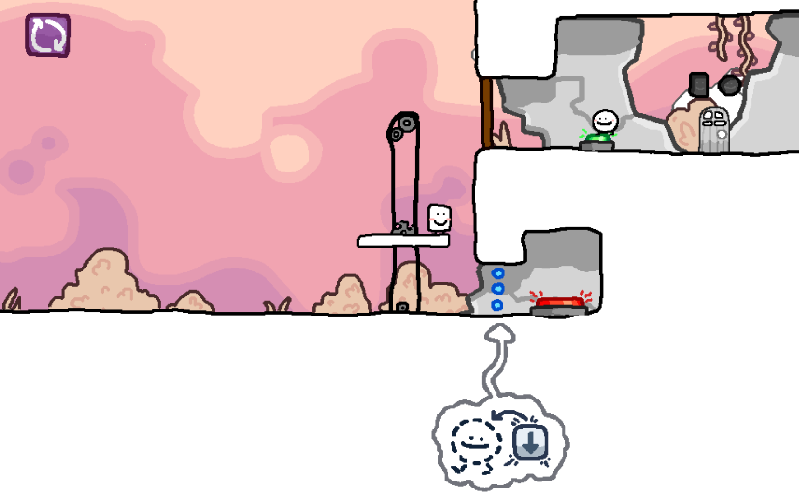

Project: Buddy System
Buddy System is a 2D Co-op puzzle game made for the Games For Change Student Challenge, a nationwide game-jam competition about promoting positivity in gaming. It was submitted under the "Positive Play" category, and it promotes cooperation by literally forcing the players to cooperate to win. Buddy System won 1st place across the whole competition.
Buddy System was made in Godot, a free open-source game engine similar to Unity. The initial design for the project was first laid out on Figma where we brainstormed the mechanics, levels, and art direction. We then moved on to programming the game in Godot, and making the art assets, which were created using Aseprite.
You can play the game here